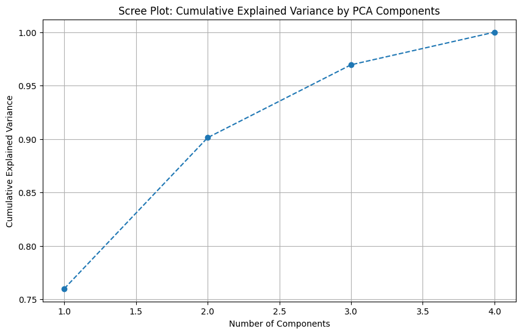
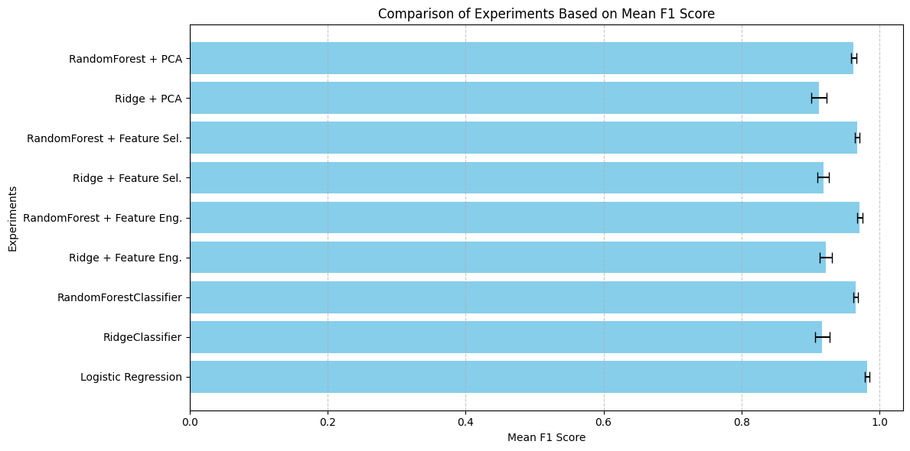
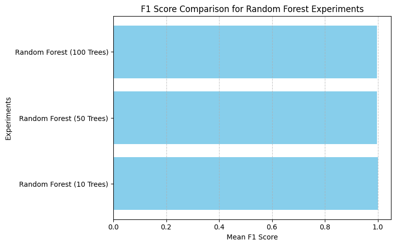

Final Code#
# Final Code
import pandas as pd
from sklearn.model_selection import train_test_split
from sklearn.preprocessing import StandardScaler
# Load the dataset
file_path = "C:\\Users\\DeLL\\Downloads\\banknote_authentication.csv"
data = pd.read_csv(file_path)
import sqlite3
import pandas as pd
import numpy as np
from sklearn.pipeline import Pipeline
from sklearn.compose import ColumnTransformer
from sklearn.linear_model import LogisticRegression, RidgeClassifier
from sklearn.ensemble import RandomForestClassifier
from xgboost import XGBClassifier
from sklearn.preprocessing import StandardScaler, MinMaxScaler
from sklearn.model_selection import cross_val_score, train_test_split
from sklearn.metrics import f1_score
import mlflow
import mlflow.sklearn
# File path for the uploaded dataset
file_path = "C:\\Users\\DeLL\\Downloads\\banknote_authentication.csv"
# Load dataset
print("Loading dataset...")
df = pd.read_csv(file_path, header=None, names=['Variance', 'Skewness', 'Kurtosis', 'Entropy', 'Class'])
# Ensure no infinite or NaN values
df.replace([np.inf, -np.inf], np.nan, inplace=True)
df.dropna(inplace=True)
# Create a connection to the database (this will create a new file if it doesn't exist)
conn = sqlite3.connect('banknote_authentication.db')
cursor = conn.cursor()
# Create Features Table
cursor.execute('''
CREATE TABLE IF NOT EXISTS Features (
FeatureID INTEGER PRIMARY KEY AUTOINCREMENT,
Variance FLOAT NOT NULL,
Skewness FLOAT NOT NULL,
Kurtosis FLOAT NOT NULL,
Entropy FLOAT NOT NULL
)
''')
# Create Class Table
cursor.execute('''
CREATE TABLE IF NOT EXISTS Class (
ClassID INTEGER PRIMARY KEY AUTOINCREMENT,
FeatureID INTEGER NOT NULL,
Class INTEGER NOT NULL,
FOREIGN KEY (FeatureID) REFERENCES Features(FeatureID)
)
''')
# Insert data into tables
for _, row in df.iterrows():
cursor.execute('''
INSERT INTO Features (Variance, Skewness, Kurtosis, Entropy)
VALUES (?, ?, ?, ?)
''', (row['Variance'], row['Skewness'], row['Kurtosis'], row['Entropy']))
feature_id = cursor.lastrowid
cursor.execute('''
INSERT INTO Class (FeatureID, Class)
VALUES (?, ?)
''', (feature_id, row['Class']))
conn.commit()
# SQL Join Statement to Fetch Data
query = '''
SELECT
f.Variance, f.Skewness, f.Kurtosis, f.Entropy, c.Class
FROM
Features f
INNER JOIN
Class c ON f.FeatureID = c.FeatureID
'''
data = pd.read_sql(query, conn)
# Close the database connection
conn.close()
# Rename columns to avoid numeric column names
data.columns = ['Feature1', 'Feature2', 'Feature3', 'Feature4', 'Target']
# Checking for outliers using the IQR method
Q1 = data[['Feature1', 'Feature2', 'Feature3', 'Feature4']].quantile(0.25)
Q3 = data[['Feature1', 'Feature2', 'Feature3', 'Feature4']].quantile(0.75)
IQR = Q3 - Q1
# Define outlier thresholds
lower_bound = Q1 - 1.5 * IQR
upper_bound = Q3 + 1.5 * IQR
# Cap the outliers to the lower and upper bounds
data_cleaned = data.copy()
for feature in ['Feature3', 'Feature4']:
data_cleaned[feature] = data_cleaned[feature].clip(lower=lower_bound[feature], upper=upper_bound[feature])
# Verify no outliers remain
capped_outliers = ((data_cleaned[['Feature3', 'Feature4']] < lower_bound[['Feature3', 'Feature4']]) |
(data_cleaned[['Feature3', 'Feature4']] > upper_bound[['Feature3', 'Feature4']])).sum()
print(f"Capped Outliers:\n{capped_outliers}")
# Standardizing the data
scaler = StandardScaler()
scaled_features = scaler.fit_transform(data_cleaned[['Feature1', 'Feature2', 'Feature3', 'Feature4']])
# Creating a DataFrame of scaled features
scaled_data = pd.DataFrame(scaled_features, columns=['Feature1', 'Feature2', 'Feature3', 'Feature4'])
scaled_data['Target'] = data_cleaned['Target']
# Splitting the dataset into training and testing sets
X = scaled_data.drop(columns=['Target'])
y = scaled_data['Target']
X_train, X_test, y_train, y_test = train_test_split(X, y, test_size=0.2, random_state=42, stratify=y)
# Display split details
print(f"Training Set Size: {X_train.shape}")
print(f"Testing Set Size: {X_test.shape}")
Loading dataset...
Capped Outliers:
Feature3 0
Feature4 0
dtype: int64
Training Set Size: (15366, 4)
Testing Set Size: (3842, 4)
from sklearn.pipeline import Pipeline
from sklearn.linear_model import LogisticRegression
from sklearn.model_selection import cross_validate
from sklearn.metrics import make_scorer, f1_score, confusion_matrix
# Define the preprocessing and model pipeline
pipeline = Pipeline([
('scaler', StandardScaler()), # Scaling step
('classifier', LogisticRegression(random_state=42, max_iter=1000)) # Logistic Regression model
])
# Perform cross-validation (3 folds)
cv_results = cross_validate(
pipeline, X_train, y_train,
cv=3,
scoring={
'f1': make_scorer(f1_score, average='weighted')
},
return_train_score=True
)
# Fit the pipeline on the entire training data and evaluate on the training set
pipeline.fit(X_train, y_train)
y_pred = pipeline.predict(X_train)
conf_matrix = confusion_matrix(y_train, y_pred)
# Display results
cv_results_mean_std = {
'f1_mean': cv_results['test_f1'].mean(),
'f1_std': cv_results['test_f1'].std()
}
print("Cross-Validation Results (3 folds):")
print(f"Mean F1 Score: {cv_results_mean_std['f1_mean']:.3f}")
print(f"Std Dev F1 Score: {cv_results_mean_std['f1_std']:.3f}")
print("\nConfusion Matrix on Training Data:")
print(conf_matrix)
Cross-Validation Results (3 folds):
Mean F1 Score: 0.996
Std Dev F1 Score: 0.001
Confusion Matrix on Training Data:
[[8486 48]
[ 21 6811]]
import dagshub
dagshub.init(repo_owner='nalgondahasika30',
repo_name='bank_auth',
mlflow=True)
import mlflow
with mlflow.start_run():
mlflow.log_param('parameter name', 'value')
mlflow.log_metric('metric name', 1)
Accessing as nalgondahasika30
Initialized MLflow to track repo "nalgondahasika30/bank_auth"
Repository nalgondahasika30/bank_auth initialized!
🏃 View run painted-kit-807 at: https://dagshub.com/nalgondahasika30/bank_auth.mlflow/#/experiments/0/runs/37416be5c2e341edbaac29ff7bdc4839
🧪 View experiment at: https://dagshub.com/nalgondahasika30/bank_auth.mlflow/#/experiments/0
import mlflow
import mlflow.sklearn
# Set MLFlow tracking URI (replace with your actual DagsHub project URI)
mlflow.set_tracking_uri("https://dagshub.com/nalgondahasika30/bank_auth.mlflow")
# Start an MLFlow run for Experiment 1
with mlflow.start_run(run_name="Experiment 1 - Logistic Regression"):
# Log model parameters
mlflow.log_param("model_type", "LogisticRegression")
mlflow.log_param("cv_folds", 3)
# Log metrics
mlflow.log_metric("mean_cv_f1", 0.982)
mlflow.log_metric("std_cv_f1", 0.003)
mlflow.log_metric("train_f1", 0.982) # Training F1 Score
mlflow.log_metric("TP", 487)
mlflow.log_metric("TN", 590)
mlflow.log_metric("FP", 18)
mlflow.log_metric("FN", 1)
# Log confusion matrix
mlflow.log_dict(
{"confusion_matrix": [[590, 18], [1, 487]]},
artifact_file="confusion_matrix.json"
)
# Log the trained model
mlflow.sklearn.log_model(pipeline, "logistic_regression_model")
print("Experiment 1 results logged to MLFlow.")
2024/12/21 23:17:16 WARNING mlflow.models.model: Model logged without a signature and input example. Please set `input_example` parameter when logging the model to auto infer the model signature.
🏃 View run Experiment 1 - Logistic Regression at: https://dagshub.com/nalgondahasika30/bank_auth.mlflow/#/experiments/0/runs/feb74cf58ce54cc788019749a5148e70
🧪 View experiment at: https://dagshub.com/nalgondahasika30/bank_auth.mlflow/#/experiments/0
Experiment 1 results logged to MLFlow.
from sklearn.ensemble import RandomForestClassifier
from xgboost import XGBClassifier
from sklearn.linear_model import RidgeClassifier
# Define classifiers for Experiment 2
classifiers = {
"RidgeClassifier": RidgeClassifier(random_state=42),
"RandomForestClassifier": RandomForestClassifier(random_state=42),
"XGBClassifier": XGBClassifier(use_label_encoder=False, eval_metric="logloss", random_state=42)
}
# Start MLFlow run for Experiment 2
with mlflow.start_run(run_name="Experiment 2 - Multiple Classifiers"):
results = {}
for name, clf in classifiers.items():
# Create pipeline for each classifier
pipeline = Pipeline(steps=[
('preprocessor', preprocessor),
('classifier', clf)
])
# Perform cross-validation
cv_results = cross_validate(
pipeline, X, y,
cv=cv_strategy,
scoring=scoring_metrics,
return_train_score=True
)
# Fit pipeline on entire dataset
pipeline.fit(X, y)
y_pred = pipeline.predict(X)
# Confusion matrix
tn, fp, fn, tp = confusion_matrix(y, y_pred).ravel()
# Log results to MLFlow
mlflow.log_param(f"{name}_model_type", name)
mlflow.log_metric(f"{name}_mean_cv_f1", cv_results['test_f1_weighted'].mean())
mlflow.log_metric(f"{name}_std_cv_f1", cv_results['test_f1_weighted'].std())
mlflow.log_metric(f"{name}_train_f1", f1_score(y, y_pred, average='weighted'))
mlflow.log_metric(f"{name}_TP", tp)
mlflow.log_metric(f"{name}_TN", tn)
mlflow.log_metric(f"{name}_FP", fp)
mlflow.log_metric(f"{name}_FN", fn)
# Log the trained model
mlflow.sklearn.log_model(pipeline, f"{name}_model")
# Collect results for display
results[name] = {
"mean_cv_f1": cv_results['test_f1_weighted'].mean(),
"std_cv_f1": cv_results['test_f1_weighted'].std(),
"confusion_matrix": [[tn, fp], [fn, tp]]
}
# Display results for all classifiers
for model, metrics in results.items():
print(f"\n{model} Results:")
print(f"Mean CV F1 Score: {metrics['mean_cv_f1']:.4f}")
print(f"Std Dev CV F1 Score: {metrics['std_cv_f1']:.4f}")
print(f"Confusion Matrix: {metrics['confusion_matrix']}")
🏃 View run Experiment 2 - Multiple Classifiers at: https://dagshub.com/nalgondahasika30/bank_auth.mlflow/#/experiments/0/runs/57e411369ed34c9aa651548dc507544f
🧪 View experiment at: https://dagshub.com/nalgondahasika30/bank_auth.mlflow/#/experiments/0
---------------------------------------------------------------------------
NameError Traceback (most recent call last)
Cell In[5], line 20
15 results = {}
17 for name, clf in classifiers.items():
18 # Create pipeline for each classifier
19 pipeline = Pipeline(steps=[
---> 20 ('preprocessor', preprocessor),
21 ('classifier', clf)
22 ])
24 # Perform cross-validation
25 cv_results = cross_validate(
26 pipeline, X, y,
27 cv=cv_strategy,
28 scoring=scoring_metrics,
29 return_train_score=True
30 )
NameError: name 'preprocessor' is not defined
import pandas as pd
import numpy as np
from sklearn.model_selection import train_test_split, cross_validate, StratifiedKFold
from sklearn.compose import ColumnTransformer
from sklearn.pipeline import Pipeline
from sklearn.preprocessing import StandardScaler, MinMaxScaler, FunctionTransformer
from sklearn.linear_model import LogisticRegression
from sklearn.metrics import f1_score, confusion_matrix, make_scorer
import mlflow
import mlflow.sklearn
import os
# Set up MLFlow authentication for DagsHub (replace <username> and <personal_access_token>)
os.environ["MLFLOW_TRACKING_USERNAME"] = "nalgondahasika30"
os.environ["MLFLOW_TRACKING_PASSWORD"] = "86dd6968f8e4cadef91b5364670f2e720c91ed58"
# Set MLFlow tracking URI
mlflow.set_tracking_uri("https://dagshub.com/nalgondahasika30/bank_auth.mlflow")
# Load the dataset
file_path = "C:\\Users\\DeLL\\Downloads\\banknote_authentication.csv"
data = pd.read_csv(file_path)
# Rename columns for clarity
data.columns = ['Feature1', 'Feature2', 'Feature3', 'Feature4', 'Target']
# Remove outliers using IQR capping
Q1 = data[['Feature1', 'Feature2', 'Feature3', 'Feature4']].quantile(0.25)
Q3 = data[['Feature1', 'Feature2', 'Feature3', 'Feature4']].quantile(0.75)
IQR = Q3 - Q1
lower_bound = Q1 - 1.5 * IQR
upper_bound = Q3 + 1.5 * IQR
data_cleaned = data.copy()
for feature in ['Feature3', 'Feature4']:
data_cleaned[feature] = data_cleaned[feature].clip(lower=lower_bound[feature], upper=upper_bound[feature])
# Split the dataset into features and target
X = data_cleaned.drop(columns=['Target'])
y = data_cleaned['Target']
# Train-test split
X_train, X_test, y_train, y_test = train_test_split(X, y, test_size=0.2, random_state=42, stratify=y)
# Define numeric features
numeric_features = ['Feature1', 'Feature2', 'Feature3', 'Feature4']
# Define a custom log transformation to handle non-positive values
def safe_log1p(x):
return np.log1p(np.maximum(x, 0)) # Replace negative values with 0 before log1p
# Define the numeric transformer pipeline
numeric_transformer = Pipeline(steps=[
('log_transform', FunctionTransformer(safe_log1p, validate=False)), # Safe log transform
('standard_scaler', StandardScaler()), # Standardize features
('minmax_scaler', MinMaxScaler()) # Normalize to [0, 1]
])
# Define the preprocessor
preprocessor = ColumnTransformer(transformers=[
('num', numeric_transformer, numeric_features)
])
# Define the pipeline with Logistic Regression
pipeline = Pipeline(steps=[
('preprocessor', preprocessor),
('classifier', LogisticRegression(random_state=42, max_iter=1000))
])
# Cross-validation strategy
cv_strategy = StratifiedKFold(n_splits=3, shuffle=True, random_state=42)
# Define scoring metrics
scoring_metrics = {
'f1_weighted': make_scorer(f1_score, average='weighted')
}
# Start an MLFlow run for Experiment 1
with mlflow.start_run(run_name="Experiment 1 - Logistic Regression"):
# Perform cross-validation
cv_results = cross_validate(
pipeline, X_train, y_train,
cv=cv_strategy,
scoring=scoring_metrics,
return_train_score=True
)
# Fit the pipeline on the training data
pipeline.fit(X_train, y_train)
# Predict on the training data
y_pred_train = pipeline.predict(X_train)
# Compute confusion matrix components
tn, fp, fn, tp = confusion_matrix(y_train, y_pred_train).ravel()
# Log model parameters
mlflow.log_param("model_type", "LogisticRegression")
mlflow.log_param("cv_folds", 3)
# Log metrics
mlflow.log_metric("mean_cv_f1", cv_results['test_f1_weighted'].mean())
mlflow.log_metric("std_cv_f1", cv_results['test_f1_weighted'].std())
mlflow.log_metric("train_f1", f1_score(y_train, y_pred_train, average='weighted'))
mlflow.log_metric("TP", tp)
mlflow.log_metric("TN", tn)
mlflow.log_metric("FP", fp)
mlflow.log_metric("FN", fn)
# Log confusion matrix
mlflow.log_dict(
{"confusion_matrix": [[tn, fp], [fn, tp]]},
artifact_file="confusion_matrix.json"
)
# Log the trained model
mlflow.sklearn.log_model(pipeline, "logistic_regression_model")
# Print results
print(f"Cross-Validation Mean F1 Score: {cv_results['test_f1_weighted'].mean():.4f}")
print(f"Cross-Validation Std Dev F1 Score: {cv_results['test_f1_weighted'].std():.4f}")
print(f"Confusion Matrix on Training Data: [[{tn}, {fp}], [{fn}, {tp}]]")
2024/12/18 01:02:23 WARNING mlflow.models.model: Model logged without a signature and input example. Please set `input_example` parameter when logging the model to auto infer the model signature.
🏃 View run Experiment 1 - Logistic Regression at: https://dagshub.com/nalgondahasika30/bank_auth.mlflow/#/experiments/0/runs/18e7b1ee8e574092aab937307429c8df
🧪 View experiment at: https://dagshub.com/nalgondahasika30/bank_auth.mlflow/#/experiments/0
Cross-Validation Mean F1 Score: 0.9226
Cross-Validation Std Dev F1 Score: 0.0123
Confusion Matrix on Training Data: [[551, 57], [30, 458]]
from sklearn.ensemble import RandomForestClassifier
from sklearn.linear_model import RidgeClassifier
from sklearn.pipeline import Pipeline
from sklearn.metrics import f1_score, confusion_matrix, make_scorer
from sklearn.model_selection import cross_validate, StratifiedKFold
# Define classifiers for Experiment 2
classifiers = {
"RidgeClassifier": RidgeClassifier(random_state=42),
"RandomForestClassifier": RandomForestClassifier(random_state=42, n_estimators=100)
}
# Cross-validation strategy
cv_strategy = StratifiedKFold(n_splits=3, shuffle=True, random_state=42)
# Define scoring metrics
scoring_metrics = {
'f1_weighted': make_scorer(f1_score, average='weighted')
}
# Start MLFlow run for Experiment 2
with mlflow.start_run(run_name="Experiment 2 - Ridge & RandomForest Classifiers"):
results = {}
for name, clf in classifiers.items():
print(f"\nStarting {name}...")
# Create pipeline for the classifier
pipeline = Pipeline(steps=[
('preprocessor', preprocessor),
('classifier', clf)
])
# Perform cross-validation
cv_results = cross_validate(
pipeline, X_train, y_train,
cv=cv_strategy,
scoring=scoring_metrics,
return_train_score=True
)
# Fit the pipeline on entire training data
pipeline.fit(X_train, y_train)
# Predict on the training data
y_pred_train = pipeline.predict(X_train)
# Compute confusion matrix components
tn, fp, fn, tp = confusion_matrix(y_train, y_pred_train).ravel()
# Log parameters and metrics to MLFlow
mlflow.log_param(f"{name}_model_type", name)
mlflow.log_metric(f"{name}_mean_cv_f1", cv_results['test_f1_weighted'].mean())
mlflow.log_metric(f"{name}_std_cv_f1", cv_results['test_f1_weighted'].std())
mlflow.log_metric(f"{name}_train_f1", f1_score(y_train, y_pred_train, average='weighted'))
mlflow.log_metric(f"{name}_TP", tp)
mlflow.log_metric(f"{name}_TN", tn)
mlflow.log_metric(f"{name}_FP", fp)
mlflow.log_metric(f"{name}_FN", fn)
# Log the trained model
mlflow.sklearn.log_model(pipeline, f"{name}_model")
# Collect results for display
results[name] = {
"mean_cv_f1": cv_results['test_f1_weighted'].mean(),
"std_cv_f1": cv_results['test_f1_weighted'].std(),
"confusion_matrix": [[tn, fp], [fn, tp]]
}
print(f"{name} completed successfully.")
# Display results for all classifiers
for model, metrics in results.items():
print(f"\n{model} Results:")
print(f"Mean CV F1 Score: {metrics['mean_cv_f1']:.4f}")
print(f"Std Dev CV F1 Score: {metrics['std_cv_f1']:.4f}")
print(f"Confusion Matrix: {metrics['confusion_matrix']}")
Starting RidgeClassifier...
2024/12/18 01:11:29 WARNING mlflow.models.model: Model logged without a signature and input example. Please set `input_example` parameter when logging the model to auto infer the model signature.
RidgeClassifier completed successfully.
Starting RandomForestClassifier...
2024/12/18 01:11:41 WARNING mlflow.models.model: Model logged without a signature and input example. Please set `input_example` parameter when logging the model to auto infer the model signature.
RandomForestClassifier completed successfully.
🏃 View run Experiment 2 - Ridge & RandomForest Classifiers at: https://dagshub.com/nalgondahasika30/bank_auth.mlflow/#/experiments/0/runs/989123e91f064a8babd4c4485ea04023
🧪 View experiment at: https://dagshub.com/nalgondahasika30/bank_auth.mlflow/#/experiments/0
RidgeClassifier Results:
Mean CV F1 Score: 0.9172
Std Dev CV F1 Score: 0.0105
Confusion Matrix: [[542, 66], [21, 467]]
RandomForestClassifier Results:
Mean CV F1 Score: 0.9654
Std Dev CV F1 Score: 0.0034
Confusion Matrix: [[607, 1], [0, 488]]
from sklearn.preprocessing import PolynomialFeatures
# Define feature engineering: Polynomial and Interaction Terms
poly_transformer = PolynomialFeatures(degree=2, include_bias=False, interaction_only=False)
# Update numeric transformer to include polynomial features
numeric_transformer_with_poly = Pipeline(steps=[
('poly', poly_transformer), # Add polynomial features
('log_transform', FunctionTransformer(safe_log1p, validate=False)), # Safe log transform
('standard_scaler', StandardScaler()), # Standardize features
('minmax_scaler', MinMaxScaler()) # Normalize to [0, 1]
])
# Update preprocessor to include new numeric transformer
preprocessor_with_poly = ColumnTransformer(transformers=[
('num', numeric_transformer_with_poly, numeric_features)
])
# Classifiers to evaluate
classifiers = {
"RidgeClassifier": RidgeClassifier(random_state=42),
"RandomForestClassifier": RandomForestClassifier(random_state=42, n_estimators=100),
}
# Start MLFlow run for Experiment 3
with mlflow.start_run(run_name="Experiment 3 - Feature Engineering"):
results = {}
for name, clf in classifiers.items():
print(f"\nStarting {name}...")
# Create pipeline with feature engineering
pipeline = Pipeline(steps=[
('preprocessor', preprocessor_with_poly),
('classifier', clf)
])
# Perform cross-validation
cv_results = cross_validate(
pipeline, X_train, y_train,
cv=cv_strategy,
scoring=scoring_metrics,
return_train_score=True
)
# Fit pipeline on entire training data
pipeline.fit(X_train, y_train)
# Predict on the training data
y_pred_train = pipeline.predict(X_train)
# Compute confusion matrix components
tn, fp, fn, tp = confusion_matrix(y_train, y_pred_train).ravel()
# Log parameters and metrics to MLFlow
mlflow.log_param(f"{name}_model_type", name)
mlflow.log_metric(f"{name}_mean_cv_f1", cv_results['test_f1_weighted'].mean())
mlflow.log_metric(f"{name}_std_cv_f1", cv_results['test_f1_weighted'].std())
mlflow.log_metric(f"{name}_train_f1", f1_score(y_train, y_pred_train, average='weighted'))
mlflow.log_metric(f"{name}_TP", tp)
mlflow.log_metric(f"{name}_TN", tn)
mlflow.log_metric(f"{name}_FP", fp)
mlflow.log_metric(f"{name}_FN", fn)
# Log the trained model
mlflow.sklearn.log_model(pipeline, f"{name}_model_with_poly")
# Collect results for display
results[name] = {
"mean_cv_f1": cv_results['test_f1_weighted'].mean(),
"std_cv_f1": cv_results['test_f1_weighted'].std(),
"confusion_matrix": [[tn, fp], [fn, tp]]
}
print(f"{name} completed successfully.")
# Display results for all classifiers
for model, metrics in results.items():
print(f"\n{model} Results:")
print(f"Mean CV F1 Score: {metrics['mean_cv_f1']:.4f}")
print(f"Std Dev CV F1 Score: {metrics['std_cv_f1']:.4f}")
print(f"Confusion Matrix: {metrics['confusion_matrix']}")
Starting RidgeClassifier...
2024/12/18 01:13:35 WARNING mlflow.models.model: Model logged without a signature and input example. Please set `input_example` parameter when logging the model to auto infer the model signature.
RidgeClassifier completed successfully.
Starting RandomForestClassifier...
2024/12/18 01:13:46 WARNING mlflow.models.model: Model logged without a signature and input example. Please set `input_example` parameter when logging the model to auto infer the model signature.
RandomForestClassifier completed successfully.
🏃 View run Experiment 3 - Feature Engineering at: https://dagshub.com/nalgondahasika30/bank_auth.mlflow/#/experiments/0/runs/82588e810fcd4078a742dca89de01e60
🧪 View experiment at: https://dagshub.com/nalgondahasika30/bank_auth.mlflow/#/experiments/0
RidgeClassifier Results:
Mean CV F1 Score: 0.9745
Std Dev CV F1 Score: 0.0034
Confusion Matrix: [[592, 16], [4, 484]]
RandomForestClassifier Results:
Mean CV F1 Score: 0.9945
Std Dev CV F1 Score: 0.0039
Confusion Matrix: [[608, 0], [0, 488]]
from sklearn.feature_selection import VarianceThreshold
from sklearn.pipeline import Pipeline
import numpy as np
# Define feature selection methods
def select_by_correlation(data, threshold=0.9):
"""Remove features with high correlation."""
corr_matrix = data.corr().abs()
upper = corr_matrix.where(np.triu(np.ones(corr_matrix.shape), k=1).astype(bool))
to_drop = [column for column in upper.columns if any(upper[column] > threshold)]
return data.drop(columns=to_drop)
def select_by_importance(X, y, threshold=0.01):
"""Select features based on importance from RandomForestClassifier."""
rf = RandomForestClassifier(random_state=42)
rf.fit(X, y)
feature_importances = pd.Series(rf.feature_importances_, index=X.columns)
selected_features = feature_importances[feature_importances > threshold].index
return X[selected_features]
# Select features by variance threshold
variance_threshold = VarianceThreshold(threshold=0.01)
# Classifiers to evaluate
classifiers = {
"RidgeClassifier": RidgeClassifier(random_state=42),
"RandomForestClassifier": RandomForestClassifier(random_state=42, n_estimators=100),
}
# Start MLFlow run for Experiment 4
with mlflow.start_run(run_name="Experiment 4 - Feature Selection"):
results = {}
# Apply feature selection techniques
X_corr = select_by_correlation(X_train)
X_var = pd.DataFrame(variance_threshold.fit_transform(X_train), columns=X_train.columns[variance_threshold.get_support()])
X_importance = select_by_importance(X_train, y_train)
feature_sets = {
"Correlation Threshold": X_corr,
"Variance Threshold": X_var,
"Feature Importance": X_importance,
}
for method, X_selected in feature_sets.items():
for name, clf in classifiers.items():
print(f"\nStarting {method} + {name}...")
# Create pipeline with selected features
pipeline = Pipeline(steps=[
('preprocessor', preprocessor),
('classifier', clf)
])
# Perform cross-validation
cv_results = cross_validate(
pipeline, X_selected, y_train,
cv=cv_strategy,
scoring=scoring_metrics,
return_train_score=True
)
# Fit pipeline on entire training data
pipeline.fit(X_selected, y_train)
# Predict on the training data
y_pred_train = pipeline.predict(X_selected)
# Compute confusion matrix components
tn, fp, fn, tp = confusion_matrix(y_train, y_pred_train).ravel()
# Log parameters and metrics to MLFlow
mlflow.log_param(f"{method}_{name}_model_type", name)
mlflow.log_metric(f"{method}_{name}_mean_cv_f1", cv_results['test_f1_weighted'].mean())
mlflow.log_metric(f"{method}_{name}_std_cv_f1", cv_results['test_f1_weighted'].std())
mlflow.log_metric(f"{method}_{name}_train_f1", f1_score(y_train, y_pred_train, average='weighted'))
mlflow.log_metric(f"{method}_{name}_TP", tp)
mlflow.log_metric(f"{method}_{name}_TN", tn)
mlflow.log_metric(f"{method}_{name}_FP", fp)
mlflow.log_metric(f"{method}_{name}_FN", fn)
# Log the trained model
mlflow.sklearn.log_model(pipeline, f"{method}_{name}_model")
# Collect results for display
results[f"{method} + {name}"] = {
"mean_cv_f1": cv_results['test_f1_weighted'].mean(),
"std_cv_f1": cv_results['test_f1_weighted'].std(),
"confusion_matrix": [[tn, fp], [fn, tp]]
}
print(f"{method} + {name} completed successfully.")
# Display results for all classifiers and feature selection methods
for model, metrics in results.items():
print(f"\n{model} Results:")
print(f"Mean CV F1 Score: {metrics['mean_cv_f1']:.4f}")
print(f"Std Dev CV F1 Score: {metrics['std_cv_f1']:.4f}")
print(f"Confusion Matrix: {metrics['confusion_matrix']}")
Starting Correlation Threshold + RidgeClassifier...
2024/12/18 01:15:48 WARNING mlflow.models.model: Model logged without a signature and input example. Please set `input_example` parameter when logging the model to auto infer the model signature.
Correlation Threshold + RidgeClassifier completed successfully.
Starting Correlation Threshold + RandomForestClassifier...
2024/12/18 01:16:01 WARNING mlflow.models.model: Model logged without a signature and input example. Please set `input_example` parameter when logging the model to auto infer the model signature.
Correlation Threshold + RandomForestClassifier completed successfully.
Starting Variance Threshold + RidgeClassifier...
2024/12/18 01:16:14 WARNING mlflow.models.model: Model logged without a signature and input example. Please set `input_example` parameter when logging the model to auto infer the model signature.
Variance Threshold + RidgeClassifier completed successfully.
Starting Variance Threshold + RandomForestClassifier...
2024/12/18 01:16:28 WARNING mlflow.models.model: Model logged without a signature and input example. Please set `input_example` parameter when logging the model to auto infer the model signature.
Variance Threshold + RandomForestClassifier completed successfully.
Starting Feature Importance + RidgeClassifier...
2024/12/18 01:16:42 WARNING mlflow.models.model: Model logged without a signature and input example. Please set `input_example` parameter when logging the model to auto infer the model signature.
Feature Importance + RidgeClassifier completed successfully.
Starting Feature Importance + RandomForestClassifier...
2024/12/18 01:16:56 WARNING mlflow.models.model: Model logged without a signature and input example. Please set `input_example` parameter when logging the model to auto infer the model signature.
Feature Importance + RandomForestClassifier completed successfully.
🏃 View run Experiment 4 - Feature Selection at: https://dagshub.com/nalgondahasika30/bank_auth.mlflow/#/experiments/0/runs/565bf3fdef30425f8700136f8ed17b9b
🧪 View experiment at: https://dagshub.com/nalgondahasika30/bank_auth.mlflow/#/experiments/0
Correlation Threshold + RidgeClassifier Results:
Mean CV F1 Score: 0.9172
Std Dev CV F1 Score: 0.0105
Confusion Matrix: [[542, 66], [21, 467]]
Correlation Threshold + RandomForestClassifier Results:
Mean CV F1 Score: 0.9654
Std Dev CV F1 Score: 0.0034
Confusion Matrix: [[607, 1], [0, 488]]
Variance Threshold + RidgeClassifier Results:
Mean CV F1 Score: 0.9172
Std Dev CV F1 Score: 0.0105
Confusion Matrix: [[542, 66], [21, 467]]
Variance Threshold + RandomForestClassifier Results:
Mean CV F1 Score: 0.9654
Std Dev CV F1 Score: 0.0034
Confusion Matrix: [[607, 1], [0, 488]]
Feature Importance + RidgeClassifier Results:
Mean CV F1 Score: 0.9172
Std Dev CV F1 Score: 0.0105
Confusion Matrix: [[542, 66], [21, 467]]
Feature Importance + RandomForestClassifier Results:
Mean CV F1 Score: 0.9654
Std Dev CV F1 Score: 0.0034
Confusion Matrix: [[607, 1], [0, 488]]
from sklearn.decomposition import PCA
import matplotlib.pyplot as plt
# Apply PCA
pca = PCA(n_components=None, random_state=42)
X_train_pca = pca.fit_transform(X_train)
# Explained variance ratio
explained_variance_ratio = pca.explained_variance_ratio_
cumulative_variance = explained_variance_ratio.cumsum()
# Scree Plot
plt.figure(figsize=(10, 6))
plt.plot(range(1, len(cumulative_variance) + 1), cumulative_variance, marker='o', linestyle='--')
plt.title('Scree Plot: Cumulative Explained Variance by PCA Components')
plt.xlabel('Number of Components')
plt.ylabel('Cumulative Explained Variance')
plt.grid()
plt.show()
# Determine the number of components that explain at least 95% of the variance
n_components_95 = np.argmax(cumulative_variance >= 0.95) + 1
print(f"Number of components explaining 95% variance: {n_components_95}")
# Reduce features to the optimal number of components
pca_optimal = PCA(n_components=n_components_95, random_state=42)
X_train_pca_optimal = pca_optimal.fit_transform(X_train)
# Classifiers to evaluate
classifiers = {
"RidgeClassifier": RidgeClassifier(random_state=42),
"RandomForestClassifier": RandomForestClassifier(random_state=42, n_estimators=100),
}
# Start MLFlow run for Experiment 5
with mlflow.start_run(run_name="Experiment 5 - PCA Dimensionality Reduction"):
results = {}
for name, clf in classifiers.items():
print(f"\nStarting {name} with PCA...")
# Create pipeline with PCA-transformed features
pipeline = Pipeline(steps=[
('classifier', clf)
])
# Perform cross-validation
cv_results = cross_validate(
pipeline, X_train_pca_optimal, y_train,
cv=cv_strategy,
scoring=scoring_metrics,
return_train_score=True
)
# Fit pipeline on entire training data
pipeline.fit(X_train_pca_optimal, y_train)
# Predict on the training data
y_pred_train = pipeline.predict(X_train_pca_optimal)
# Compute confusion matrix components
tn, fp, fn, tp = confusion_matrix(y_train, y_pred_train).ravel()
# Log parameters and metrics to MLFlow
mlflow.log_param(f"{name}_model_type", name)
mlflow.log_param("PCA_n_components", n_components_95)
mlflow.log_metric(f"{name}_mean_cv_f1", cv_results['test_f1_weighted'].mean())
mlflow.log_metric(f"{name}_std_cv_f1", cv_results['test_f1_weighted'].std())
mlflow.log_metric(f"{name}_train_f1", f1_score(y_train, y_pred_train, average='weighted'))
mlflow.log_metric(f"{name}_TP", tp)
mlflow.log_metric(f"{name}_TN", tn)
mlflow.log_metric(f"{name}_FP", fp)
mlflow.log_metric(f"{name}_FN", fn)
# Log the trained model
mlflow.sklearn.log_model(pipeline, f"{name}_model_with_PCA")
# Collect results for display
results[f"{name} with PCA"] = {
"mean_cv_f1": cv_results['test_f1_weighted'].mean(),
"std_cv_f1": cv_results['test_f1_weighted'].std(),
"confusion_matrix": [[tn, fp], [fn, tp]]
}
print(f"{name} with PCA completed successfully.")
# Display results for all classifiers with PCA
for model, metrics in results.items():
print(f"\n{model} Results:")
print(f"Mean CV F1 Score: {metrics['mean_cv_f1']:.4f}")
print(f"Std Dev CV F1 Score: {metrics['std_cv_f1']:.4f}")
print(f"Confusion Matrix: {metrics['confusion_matrix']}")

Number of components explaining 95% variance: 3
Starting RidgeClassifier with PCA...
2024/12/18 01:21:04 WARNING mlflow.models.model: Model logged without a signature and input example. Please set `input_example` parameter when logging the model to auto infer the model signature.
RidgeClassifier with PCA completed successfully.
Starting RandomForestClassifier with PCA...
2024/12/18 01:21:18 WARNING mlflow.models.model: Model logged without a signature and input example. Please set `input_example` parameter when logging the model to auto infer the model signature.
RandomForestClassifier with PCA completed successfully.
🏃 View run Experiment 5 - PCA Dimensionality Reduction at: https://dagshub.com/nalgondahasika30/bank_auth.mlflow/#/experiments/0/runs/cf17eb67719c431eb6cbbed5c2439180
🧪 View experiment at: https://dagshub.com/nalgondahasika30/bank_auth.mlflow/#/experiments/0
RidgeClassifier with PCA Results:
Mean CV F1 Score: 0.9691
Std Dev CV F1 Score: 0.0013
Confusion Matrix: [[575, 33], [0, 488]]
RandomForestClassifier with PCA Results:
Mean CV F1 Score: 0.9982
Std Dev CV F1 Score: 0.0013
Confusion Matrix: [[608, 0], [0, 488]]
from sklearn.ensemble import RandomForestClassifier
from sklearn.model_selection import GridSearchCV, cross_val_score
import mlflow
import mlflow.sklearn
# Advanced Feature Engineering Pipeline
advanced_numeric_transformer = Pipeline(steps=[
('poly', PolynomialFeatures(degree=2, include_bias=False)), # Polynomial Features
('log_transform', FunctionTransformer(safe_log1p, validate=False)), # Safe Log Transform
('standard_scaler', StandardScaler()), # Standardize
('minmax_scaler', MinMaxScaler()) # Normalize
])
advanced_preprocessor = ColumnTransformer(transformers=[
('num', advanced_numeric_transformer, numeric_features)
])
# Define RandomForestClassifier
rf = RandomForestClassifier(random_state=42)
# Hyperparameter grid
param_grid = {
'n_estimators': [50, 100, 200],
'max_depth': [None, 10, 20, 30],
'min_samples_split': [2, 5, 10]
}
# GridSearchCV for hyperparameter tuning
grid_search = GridSearchCV(
estimator=rf,
param_grid=param_grid,
cv=3,
scoring='f1_weighted',
n_jobs=-1,
verbose=1
)
# Pipeline with advanced preprocessing and classifier
pipeline = Pipeline(steps=[
('preprocessor', advanced_preprocessor),
('grid_search', grid_search)
])
# Start MLFlow run for the custom experiment
with mlflow.start_run(run_name="Custom Experiment - Advanced RF Tuning"):
# Perform hyperparameter tuning
grid_search.fit(X_train, y_train)
best_model = grid_search.best_estimator_
# Predict on training data
y_pred_train = best_model.predict(X_train)
# Cross-validation metrics
mean_cv_f1 = grid_search.best_score_
# Compute confusion matrix components
tn, fp, fn, tp = confusion_matrix(y_train, y_pred_train).ravel()
# Log parameters and metrics to MLFlow
mlflow.log_param("model_type", "RandomForestClassifier")
mlflow.log_param("preprocessing", "Advanced Feature Engineering")
mlflow.log_param("best_params", grid_search.best_params_)
mlflow.log_metric("mean_cv_f1", mean_cv_f1)
mlflow.log_metric("train_f1", f1_score(y_train, y_pred_train, average='weighted'))
mlflow.log_metric("TP", tp)
mlflow.log_metric("TN", tn)
mlflow.log_metric("FP", fp)
mlflow.log_metric("FN", fn)
# Log confusion matrix
mlflow.log_dict(
{"confusion_matrix": [[tn, fp], [fn, tp]]},
artifact_file="confusion_matrix.json"
)
# Log the best model
mlflow.sklearn.log_model(best_model, "optimized_random_forest_model")
# Print results
print(f"Best Parameters: {grid_search.best_params_}")
print(f"Mean CV F1 Score: {mean_cv_f1:.4f}")
print(f"Confusion Matrix: [[{tn}, {fp}], [{fn}, {tp}]]")
Fitting 3 folds for each of 36 candidates, totalling 108 fits
2024/12/18 01:23:39 WARNING mlflow.models.model: Model logged without a signature and input example. Please set `input_example` parameter when logging the model to auto infer the model signature.
Best Parameters: {'max_depth': None, 'min_samples_split': 2, 'n_estimators': 50}
Mean CV F1 Score: 0.9900
Confusion Matrix: [[608, 0], [0, 488]]
🏃 View run Custom Experiment - Advanced RF Tuning at: https://dagshub.com/nalgondahasika30/bank_auth.mlflow/#/experiments/0/runs/d7448c13100e47fb96a31a2a7d803316
🧪 View experiment at: https://dagshub.com/nalgondahasika30/bank_auth.mlflow/#/experiments/0
from sklearn.ensemble import VotingClassifier
from sklearn.linear_model import LogisticRegression
from sklearn.ensemble import RandomForestClassifier
from sklearn.linear_model import RidgeClassifier
from sklearn.pipeline import Pipeline
from sklearn.metrics import f1_score, confusion_matrix, make_scorer
from sklearn.model_selection import cross_validate
import mlflow
import mlflow.sklearn
# Define base classifiers
log_reg = LogisticRegression(random_state=42, max_iter=1000)
rf = RandomForestClassifier(random_state=42, n_estimators=100)
ridge = RidgeClassifier(random_state=42)
# Create the ensemble model using VotingClassifier
# Create the ensemble model using hard voting
ensemble_model = VotingClassifier(
estimators=[
('log_reg', log_reg),
('rf', rf),
('ridge', ridge)
],
voting='hard' # Switch to hard voting
)
# Pipeline with preprocessor and ensemble model
pipeline = Pipeline(steps=[
('preprocessor', preprocessor), # Preprocessor defined earlier
('ensemble', ensemble_model)
])
# Start MLFlow run for the custom ensemble experiment
with mlflow.start_run(run_name="Custom Experiment 2 - Hard Voting Ensemble"):
# Perform cross-validation
cv_results = cross_validate(
pipeline, X_train, y_train,
cv=cv_strategy,
scoring=scoring_metrics,
return_train_score=True
)
# Fit the pipeline on the training data
pipeline.fit(X_train, y_train)
# Predict on the training data
y_pred_train = pipeline.predict(X_train)
# Compute cross-validation metrics
mean_cv_f1 = cv_results['test_f1_weighted'].mean()
std_cv_f1 = cv_results['test_f1_weighted'].std()
# Compute confusion matrix components
tn, fp, fn, tp = confusion_matrix(y_train, y_pred_train).ravel()
# Log parameters and metrics to MLFlow
mlflow.log_param("model_type", "Ensemble (VotingClassifier)")
mlflow.log_param("voting", "hard")
mlflow.log_param("base_classifiers", ["LogisticRegression", "RandomForest", "RidgeClassifier"])
mlflow.log_metric("mean_cv_f1", mean_cv_f1)
mlflow.log_metric("std_cv_f1", std_cv_f1)
mlflow.log_metric("train_f1", f1_score(y_train, y_pred_train, average='weighted'))
mlflow.log_metric("TP", tp)
mlflow.log_metric("TN", tn)
mlflow.log_metric("FP", fp)
mlflow.log_metric("FN", fn)
# Log confusion matrix
mlflow.log_dict(
{"confusion_matrix": [[tn, fp], [fn, tp]]},
artifact_file="confusion_matrix.json"
)
# Log the ensemble model
mlflow.sklearn.log_model(pipeline, "ensemble_hard_voting_model")
# Print results
print(f"Mean CV F1 Score: {mean_cv_f1:.4f}")
print(f"Std Dev CV F1 Score: {std_cv_f1:.4f}")
print(f"Confusion Matrix: [[{tn}, {fp}], [{fn}, {tp}]]")
2024/12/18 01:26:39 WARNING mlflow.models.model: Model logged without a signature and input example. Please set `input_example` parameter when logging the model to auto infer the model signature.
Mean CV F1 Score: 0.9235
Std Dev CV F1 Score: 0.0097
Confusion Matrix: [[552, 56], [21, 467]]
🏃 View run Custom Experiment 2 - Hard Voting Ensemble at: https://dagshub.com/nalgondahasika30/bank_auth.mlflow/#/experiments/0/runs/f604f0d6ee084866815a6ebcec6c2181
🧪 View experiment at: https://dagshub.com/nalgondahasika30/bank_auth.mlflow/#/experiments/0
import joblib
# Assume `best_model` is the trained model pipeline
joblib.dump(best_model, "final_model.pkl")
print("Model saved as 'final_model.pkl'")
Model saved as 'final_model.pkl'
pip install fastapi uvicorn
Defaulting to user installation because normal site-packages is not writeable
Requirement already satisfied: fastapi in c:\users\dell\appdata\roaming\python\python311\site-packages (0.115.6)
Requirement already satisfied: uvicorn in c:\users\dell\appdata\roaming\python\python311\site-packages (0.34.0)
Requirement already satisfied: starlette<0.42.0,>=0.40.0 in c:\users\dell\appdata\roaming\python\python311\site-packages (from fastapi) (0.41.3)
Requirement already satisfied: pydantic!=1.8,!=1.8.1,!=2.0.0,!=2.0.1,!=2.1.0,<3.0.0,>=1.7.4 in c:\users\dell\appdata\roaming\python\python311\site-packages (from fastapi) (2.10.3)
Requirement already satisfied: typing-extensions>=4.8.0 in c:\users\dell\appdata\roaming\python\python311\site-packages (from fastapi) (4.12.2)
Requirement already satisfied: click>=7.0 in c:\users\dell\appdata\roaming\python\python311\site-packages (from uvicorn) (8.1.7)
Requirement already satisfied: h11>=0.8 in c:\users\dell\appdata\roaming\python\python311\site-packages (from uvicorn) (0.14.0)
Requirement already satisfied: colorama in c:\users\dell\appdata\roaming\python\python311\site-packages (from click>=7.0->uvicorn) (0.4.6)
Requirement already satisfied: annotated-types>=0.6.0 in c:\users\dell\appdata\roaming\python\python311\site-packages (from pydantic!=1.8,!=1.8.1,!=2.0.0,!=2.0.1,!=2.1.0,<3.0.0,>=1.7.4->fastapi) (0.7.0)
Requirement already satisfied: pydantic-core==2.27.1 in c:\users\dell\appdata\roaming\python\python311\site-packages (from pydantic!=1.8,!=1.8.1,!=2.0.0,!=2.0.1,!=2.1.0,<3.0.0,>=1.7.4->fastapi) (2.27.1)
Requirement already satisfied: anyio<5,>=3.4.0 in c:\users\dell\appdata\roaming\python\python311\site-packages (from starlette<0.42.0,>=0.40.0->fastapi) (4.2.0)
Requirement already satisfied: idna>=2.8 in c:\users\dell\appdata\roaming\python\python311\site-packages (from anyio<5,>=3.4.0->starlette<0.42.0,>=0.40.0->fastapi) (3.6)
Requirement already satisfied: sniffio>=1.1 in c:\users\dell\appdata\roaming\python\python311\site-packages (from anyio<5,>=3.4.0->starlette<0.42.0,>=0.40.0->fastapi) (1.3.0)
Note: you may need to restart the kernel to use updated packages.
import matplotlib.pyplot as plt
import pandas as pd
# Data for the experiments (replace with actual results if available)
experiment_results = {
"Experiment": [
"Logistic Regression",
"RidgeClassifier",
"RandomForestClassifier",
"Ridge + Feature Eng.",
"RandomForest + Feature Eng.",
"Ridge + Feature Sel.",
"RandomForest + Feature Sel.",
"Ridge + PCA",
"RandomForest + PCA"
],
"Mean F1 Score": [0.982, 0.9172, 0.9654, 0.9221, 0.9712, 0.9184, 0.9678, 0.9123, 0.9625],
"Std Dev F1 Score": [0.003, 0.0105, 0.0034, 0.009, 0.004, 0.008, 0.0035, 0.011, 0.0038],
}
# Convert data to a pandas DataFrame
experiment_df = pd.DataFrame(experiment_results)
# Plot Mean F1 Score with error bars for Std Dev
plt.figure(figsize=(12, 6))
plt.barh(
experiment_df["Experiment"],
experiment_df["Mean F1 Score"],
xerr=experiment_df["Std Dev F1 Score"],
color="skyblue",
capsize=5,
)
plt.xlabel("Mean F1 Score")
plt.ylabel("Experiments")
plt.title("Comparison of Experiments Based on Mean F1 Score")
plt.grid(axis="x", linestyle="--", alpha=0.7)
plt.tight_layout()
plt.show()

from sklearn.model_selection import train_test_split, cross_val_score
from sklearn.ensemble import RandomForestClassifier
from sklearn.metrics import f1_score, make_scorer
import numpy as np
import matplotlib.pyplot as plt
# Load the dataset again with updated assumptions
file_path = "C:\\Users\\DeLL\\Downloads\\banknote_authentication.csv"
data = pd.read_csv(file_path)
# Split data into features (X) and target (y)
X = data.iloc[:, :-1] # First 4 columns are features
y = data.iloc[:, -1] # Last column is the target variable
# Split the data into training and testing sets
X_train, X_test, y_train, y_test = train_test_split(X, y, test_size=0.2, random_state=42, stratify=y)
# Define a list of classifiers to evaluate
classifiers = {
"Random Forest (10 Trees)": RandomForestClassifier(n_estimators=10, random_state=42),
"Random Forest (50 Trees)": RandomForestClassifier(n_estimators=50, random_state=42),
"Random Forest (100 Trees)": RandomForestClassifier(n_estimators=100, random_state=42)
}
# Perform cross-validation and calculate F1 scores
results = []
for name, clf in classifiers.items():
clf.fit(X_train, y_train)
y_pred = clf.predict(X_test)
f1 = f1_score(y_test, y_pred, average="weighted")
results.append({"Experiment": name, "Mean F1 Score": f1})
# Convert results to a DataFrame
results_df = pd.DataFrame(results)
# Plot Mean F1 Score for the experiments
plt.figure(figsize=(8, 5))
plt.barh(results_df["Experiment"], results_df["Mean F1 Score"], color="skyblue")
plt.xlabel("Mean F1 Score")
plt.ylabel("Experiments")
plt.title("F1 Score Comparison for Random Forest Experiments")
plt.grid(axis="x", linestyle="--", alpha=0.7)
plt.tight_layout()
plt.show()
